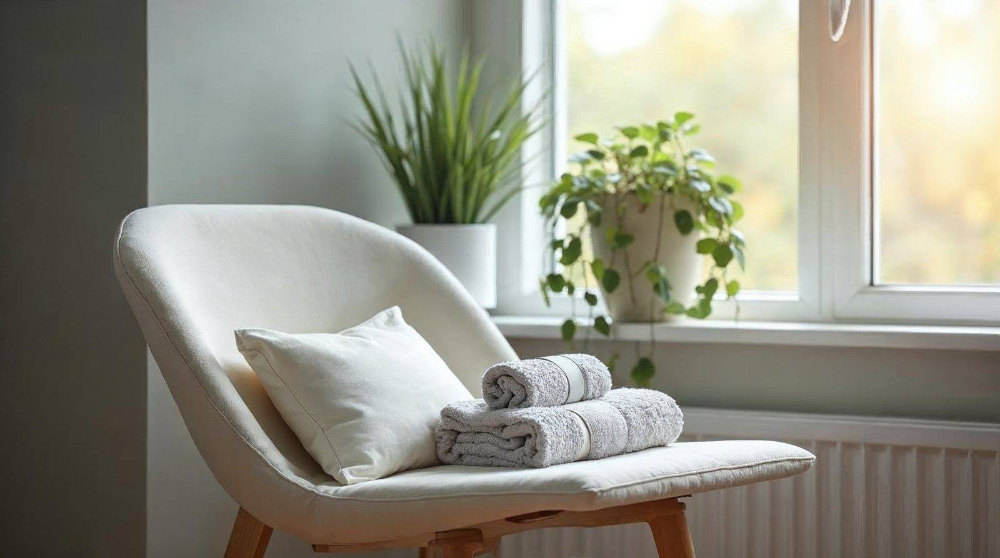
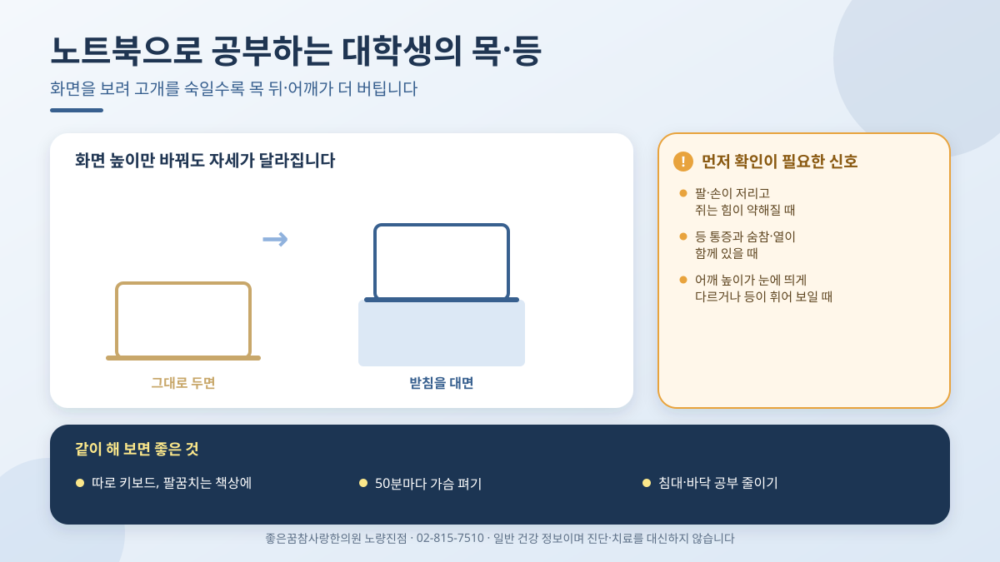

이종호 한의사 감수좋은꿈참사랑한의원 대표원장 (한의사 면허번호 19769)발행 2026-11-24 · 수정 2026-11-26
이 글의 차례
- 왜 이런 불편이 생길 수 있나요
- 왜 고개가 앞으로 나오면 등까지 굽을까요
- 먼저 이렇게 여쭙니다
- 일상에서 먼저 해 볼 수 있는 것
- 공부 자리, 이렇게 순서대로 맞춰 보세요
- 상황별 예시
- 스스로 점검해 보세요
- 비슷한 불편과 어떻게 구분하나요?
- 한의원에서 함께 살필 수 있는 경우
- 목과 등을 위한 가벼운 동작은 어떻게 하나요?
- 잠과 휴대폰 습관도 함께 살펴봅니다
- 가방과 이동 습관도 살펴보세요
- 진료를 받는 동안에는 어떻게 지내면 좋을까요?
- 시험기간에는 무엇을 더 챙기면 좋을까요?
- 화면 크기와 눈도 함께 살펴보세요
- 첫 진료 전에 무엇을 준비하면 좋을까요?
- 얼마나 지켜보고 언제 상담할까요?
- 이렇게 기록해 오시면 상담이 쉬워집니다
- 다시 굽지 않으려면 무엇을 챙길까요?
- 이런 증상은 먼저 확인이 필요합니다
노트북으로 오래 공부한 뒤 목이 앞으로 나오고 등이 굽어 보인다면, 자세를 의식하기보다 화면을 눈높이로 올리고 따로 키보드를 쓰는 것처럼 환경을 먼저 바꾸는 편이 오래갑니다. 상도동 숭실대 학생들처럼 자취방, 도서관, 카페를 옮겨 다니며 노트북 하나로 공부하는 대학생에게서 자주 보는 모습입니다.
자세는 하루아침에 굽지 않듯 펴지는 데도 시간이 걸립니다. 공부하는 자리부터 바꾸고 2~3주 지켜보시되, 목과 등의 뻐근함에 두통이나 팔 저림이 더해졌다면 한 번 살펴보시는 것이 좋습니다.
왜 이런 불편이 생길 수 있나요
- 노트북은 화면과 키보드가 붙어 있어 화면을 보려면 고개를 숙여야 합니다.
- 침대나 바닥에서 공부하면 등이 둥글게 말린 자세가 오래 이어집니다.
- 고개가 앞으로 나올수록 목 뒤와 어깨 근육이 더 많이 버팁니다.
- 시험기간처럼 앉아 있는 시간이 갑자기 늘면 불편이 한꺼번에 나타나기도 합니다.
- 자취방 책상이 좁거나 의자가 낮으면 팔꿈치를 둘 곳이 없어 어깨가 들리고 몸이 화면 쪽으로 다가가게 됩니다.
- 카페나 도서관을 옮겨 다니면 자리마다 책상과 의자 높이가 달라 몸이 매번 맞춰 줘야 합니다.
- 화면 글씨가 작거나 시력이 맞지 않으면 화면을 보려고 고개가 앞으로 나옵니다.
왜 고개가 앞으로 나오면 등까지 굽을까요
고개가 앞으로 나오면 머리 무게를 붙잡기 위해 목 뒤 근육이 계속 당겨지고, 그 힘이 어깨와 등 위쪽까지 이어집니다. 이 상태가 오래되면 등 위쪽이 둥글게 말린 채 굳기 쉽습니다.
등이 굽으면 가슴 앞쪽 근육은 짧아지고 등 쪽 근육은 늘어난 채 지칩니다. 그래서 일부러 가슴을 펴도 금방 다시 말리는 느낌이 듭니다.
등이 둥글게 말리면 숨도 얕아지기 쉽습니다. 공부할 때 숨이 답답하고 쉽게 피곤하다는 이야기를 함께 꺼내는 학생도 적지 않습니다.
먼저 이렇게 여쭙니다
- 하루에 노트북 앞에 몇 시간 정도 앉아 있나요?
- 주로 공부하는 자리는 책상인가요, 침대나 바닥인가요?
- 목 뒤 뻐근함, 등 결림, 두통 중 어떤 것이 있나요?
- 오래 앉아 있다 일어날 때 허리도 불편한가요?
- 공부할 때 휴대폰도 함께 오래 보시나요?
- 화면 글씨가 잘 보이나요, 안경이나 렌즈를 쓰시나요?
- 잘 때 베개 높이와 자는 자세는 어떤가요?
- 다시 오신 분께는 지난번 이후 화면 높이를 바꿔 보셨는지부터 이어서 여쭙니다.
일상에서 먼저 해 볼 수 있는 것
- 노트북 아래에 책이나 거치대를 받쳐 화면 윗부분을 눈높이에 맞추기
- 가능하면 따로 키보드를 쓰고 팔꿈치를 책상에 편하게 두기
- 50분 공부한 뒤 일어나 가슴을 펴고 어깨를 뒤로 돌리기
- 침대에 엎드려 노트북 보는 시간 줄이기
- 의자 높이를 맞춰 발바닥이 바닥에 닿게 앉기
- 글씨가 작다면 화면 배율을 키워 고개가 앞으로 나가지 않게 하기
- 카페에서는 등받이가 있는 자리를 고르고, 가방을 허리 뒤에 받치기
공부 자리, 이렇게 순서대로 맞춰 보세요
자세를 고치려 애쓰기보다 자리를 먼저 맞추면 몸이 따라오기 쉽습니다. 순서는 의자부터입니다. 무릎이 엉덩이와 비슷한 높이가 되게 의자를 맞추고, 깊숙이 앉아 등을 등받이에 기댑니다.
그다음 화면을 올리고, 키보드와 마우스는 팔꿈치가 90도 정도로 편하게 놓이는 자리에 둡니다.
상황별 예시
- 예를 들어 자취방에 책상이 없어 침대에 기대거나 좌식 책상에서 노트북을 쓰는 학생의 경우, 등이 둥글게 말린 채 몇 시간씩 있게 되어 저녁이면 목과 등 사이가 결릴 수 있습니다. 작은 책상과 등받이 있는 의자 하나만 갖춰도 자세가 많이 달라질 수 있습니다.
- 예를 들어 시험기간에 도서관에서 하루 열 시간 넘게 노트북으로 강의를 다시 보는 학생의 경우, 오후가 되면 뒷머리가 무겁고 눈이 침침할 수 있습니다. 강의는 화면을 높여 듣고, 필기는 노트에 따로 하며 자세를 바꿔 주는 방법이 있습니다.
- 예를 들어 카페의 낮은 테이블에 노트북을 놓고 조별 과제를 하는 경우, 몸을 앞으로 숙인 채 오래 이야기하게 됩니다. 한 시간마다 음료를 가지러 일어나는 것처럼 움직일 계기를 만들어 보세요.
스스로 점검해 보세요
- 노트북을 책상 위에 그대로 놓고 화면을 내려다본다
- 침대나 바닥에서 공부하는 시간이 하루 2시간이 넘는다
- 옆에서 보면 고개가 어깨보다 앞으로 나와 있다는 말을 듣는다
- 오후가 되면 뒷머리가 무겁거나 눈이 침침하다
- 가슴을 펴도 금방 다시 등이 말리는 느낌이다
- 팔이나 손가락이 저린 날이 있다
앞의 다섯 가지는 공부 환경부터 바꿔 볼 신호입니다. 마지막 항목은 목에서 팔로 가는 신경 쪽 문제일 수 있어 진료 때 먼저 말씀해 주세요.
비슷한 불편과 어떻게 구분하나요?
목과 등이 불편하다는 같은 말 안에도 여러 흐름이 있어, 함께 오는 증상을 보고 살피는 방향을 정합니다.
- 목 뒤와 어깨가 넓게 뻐근하고 쉬면 덜하다면, 오래 같은 자세로 버틴 근육의 긴장 쪽을 먼저 생각합니다.
- 목에서 팔, 손가락까지 저림이 내려가고 고개를 젖힐 때 심해진다면, 목에서 팔로 가는 신경 쪽을 살핍니다.
- 뒷머리와 관자놀이가 조이듯 아프다면, 목과 어깨 긴장에서 오는 두통과 눈 피로를 함께 봅니다.
- 등 가운데가 결리고 숨을 크게 쉴 때 당긴다면, 등과 갈비뼈 주변의 움직임을 함께 확인합니다.
스스로 나누기 어렵더라도 저림이 어디까지 내려가는지, 어떤 자세에서 불편한지만 기억해 오시면 충분합니다.
한의원에서 함께 살필 수 있는 경우
- 목이 앞으로 나오고 등이 굽어 불편한 경우 자세와 척추·근육의 균형을 함께 살핍니다.
- 두통과 눈 피로가 함께 있는 경우 공부 시간과 잠의 리듬을 함께 살핍니다.
- 시험기간마다 소화나 잠이 흔들리는 경우 생활 전반을 이어서 여쭙니다.
좋은꿈참사랑한의원에서는 모든 분께 맥부터 짚으며 공부하는 자리와 시간을 여쭙고, 목과 등의 움직임, 어깨와 골반의 좌우 균형을 살핍니다. 팔 저림이 있다면 감각과 힘도 함께 확인합니다.
필요하다고 판단될 때 추나와 침 등을 상태에 맞춰 정하고, 귀가 전에는 공부 중 틈틈이 할 동작과 화면 높이 맞추는 법을 알려 드립니다. 다음 방문 때는 같은 동작으로 다시 확인합니다.
목과 등을 위한 가벼운 동작은 어떻게 하나요?
의자에 바르게 앉아 턱을 수평으로 살짝 뒤로 당기고, 뒷목이 길어지는 느낌을 5초쯤 유지했다가 풀어 주세요. 고개를 젖히는 동작이 아니라는 점만 기억하시면 됩니다.
의자 등받이 윗부분에 등 가운데를 대고, 양손을 머리 뒤에 받친 채 가슴을 천천히 들어 올려 보세요. 둥글게 말린 등 위쪽을 펴 주는 동작입니다.
문틀에 양팔을 대고 한 발 앞으로 나가며 가슴 앞쪽을 늘려 주는 동작도 좋습니다. 어느 동작이든 저림이 생기거나 아프면 멈추세요.
잠과 휴대폰 습관도 함께 살펴봅니다
노트북을 덮은 뒤에도 침대에 누워 휴대폰을 오래 보면 목은 하루 종일 숙여진 채로 지내게 됩니다. 잠들기 전 화면 보는 시간을 줄이면 목도 쉬고 잠도 깊어지는 데 도움이 될 수 있습니다.
베개가 너무 높거나 낮으면 아침부터 목이 뻐근할 수 있습니다. 바로 누웠을 때 목 뒤가 편하게 받쳐지는 높이를 찾아보세요.
가방과 이동 습관도 살펴보세요
노트북과 전공책을 한쪽 어깨에 메고 언덕길을 오르내리면 어깨 높이가 달라지고 목이 한쪽으로 당길 수 있습니다. 무거운 날은 양쪽 끈이 있는 백팩을 쓰고, 필요 없는 책은 사물함이나 집에 두세요.
강의실과 도서관 사이를 옮겨 다니는 시간은 몸을 펴 줄 좋은 기회입니다. 걸을 때만큼은 휴대폰을 넣어 두고 고개를 들어 걸어 보세요.
진료를 받는 동안에는 어떻게 지내면 좋을까요?
진료실에서 정한 화면 높이와 쉬는 시간을 지켜 보시고, 지키기 어려웠던 것은 그대로 말씀해 주세요. 공부 장소가 자주 바뀐다면 장소마다 할 수 있는 방법을 함께 고릅니다.
시험기간에는 무엇을 더 챙기면 좋을까요?
시험기간에는 앉아 있는 시간이 갑자기 두세 배로 늘어나 평소 괜찮던 자리도 부담이 됩니다. 시험 2~3주 전부터 공부 자리를 미리 맞춰 두면 몸이 적응할 시간을 벌 수 있습니다.
공부 시간을 늘릴수록 쉬는 시간도 시간표에 함께 적어 두세요. 쉬는 시간은 미루기 쉬워서, 적어 두어야 지키기 쉽습니다.
밤샘이 이어지면 목과 어깨의 긴장이 잘 풀리지 않고 두통도 잦아질 수 있습니다. 잠을 줄이기보다 낮 시간 공부의 흐름을 다듬는 쪽으로 계획을 세워 보세요. 이미 잠 리듬이 밀렸다면 과제와 시험으로 밤샘이 잦은 대학생의 잠 리듬이 무너졌을 때는 어떻게 되돌리나요?도 함께 읽어 보세요.
화면 크기와 눈도 함께 살펴보세요
노트북 화면이 작으면 글씨를 보려고 저절로 고개가 앞으로 나갑니다. 집에서는 큰 모니터를 연결해 쓰는 것도 방법입니다.
시력이 바뀌었는데 안경을 그대로 쓰고 있다면 화면을 보려고 몸이 앞으로 기울 수 있습니다. 오래 공부한 뒤 눈이 유난히 피곤하다면 시력도 한 번 확인해 보세요.
20분쯤 화면을 보았다면 창밖이나 먼 곳을 잠깐 바라보며 눈을 쉬게 해 주세요.
첫 진료 전에 무엇을 준비하면 좋을까요?
공부하는 자리 사진을 찍어 오시면 책상과 의자 높이, 노트북 위치를 함께 보며 이야기하기 쉽습니다. 자리가 여러 곳이라면 자주 쓰는 곳 두세 군데면 충분합니다.
노트북을 들고 다니신다면 진료 때 가져오셔도 좋습니다. 평소 공부하는 자세를 직접 보여 주시면 무엇부터 바꿀지 정하기 쉽습니다.
진료 때 목과 등, 어깨를 살피기 때문에 목 부분이 넉넉하고 팔을 움직이기 편한 옷이 좋습니다.
두통 등으로 드시는 약이 있다면 이름과 횟수를 적어 오세요.
시험과 과제 일정을 알려 주시면 그 일정에 맞춰 진료와 생활 계획을 함께 세울 수 있습니다. 수업 시간표가 정해져 있다면 공강 시간에 맞춰 오시는 것도 방법입니다.
목과 등 말고 허리나 손목도 오래 공부한 뒤 불편하다면 함께 말씀해 주세요. 앉는 자세 전체를 한 번에 살펴볼 수 있습니다. 오래 앉아 있다 일어날 때 엉덩이나 다리가 저린 적이 있다면 그것도 적어 두세요.
최근 새 노트북으로 바꾸었거나 공부하는 장소가 바뀐 뒤 불편이 시작되었다면, 그 시기도 함께 알려 주세요. 무엇이 달라졌는지 살펴보는 데 도움이 됩니다.
얼마나 지켜보고 언제 상담할까요?
- 공부 자리를 바꾼 뒤 2~3주 지켜보며 오후의 뻐근함과 두통이 어떻게 달라지는지 보세요.
- 3주가 지나도 같은 자리가 결리거나 두통이 일주일에 여러 번 온다면 상담을 권합니다.
- 팔이나 손가락 저림이 함께 생겼다면 기다리기보다 일찍 상담해 보세요.

이렇게 기록해 오시면 상담이 쉬워집니다
- 하루 노트북 사용 시간
- 주로 공부하는 자리와 의자·책상 모습(사진도 좋습니다)
- 두통·눈 피로가 오는 시간
- 친구가 찍어 준 옆모습 사진(있다면)
- 시험과 과제 일정
기록은 한 줄이면 됩니다. 예를 들어 '목요일, 도서관 6시간, 거치대 사용, 오후 4시 뒷머리 무거움 5점'처럼 적으면 공부 자리를 바꾼 뒤의 차이가 잘 보입니다.
다시 굽지 않으려면 무엇을 챙길까요?
시험이 끝나면 잠시 편해지다가 다음 시험기간에 다시 굳는 일이 많습니다. 바꾼 공부 자리는 시험이 없는 주에도 그대로 써 보세요.
벽에 등을 대고 섰을 때 뒤통수와 어깨가 함께 닿는지 하루 한 번 확인해 보세요. 어깨를 억지로 뒤로 젖히고 버티면 금방 지치니, 가슴을 짧게 자주 펴 주는 편이 오래갑니다.
걷기나 가벼운 운동으로 몸을 움직이는 시간을 하루에 조금이라도 만들어 두면, 오래 앉아 있는 날의 뻐근함이 덜할 수 있습니다.
노트북 하나로 수업과 과제, 시험까지 버텨 내느라 목과 등이 먼저 지쳤을 겁니다. 자세는 천천히 바뀌니 조급해하지 않으셔도 됩니다. 다음에 오시면 오후 몇 시쯤 뒷머리가 무거워지는지부터 여쭙겠습니다.
이런 증상은 먼저 확인이 필요합니다
- 팔이나 손에 힘이 빠지거나 저림이 점점 심해지는 경우
- 등 통증과 함께 숨쉬기 불편하거나 열이 나는 경우
이런 신호가 있으면 한의원보다 가까운 병원이나 응급실을 먼저 찾으세요.

여쭙는 것
- 하루에 노트북 앞에 몇 시간 정도 앉아 있나요?
- 주로 공부하는 자리는 책상인가요, 침대나 바닥인가요?
- 목 뒤 뻐근함, 등 결림, 두통 중 어떤 것이 있나요?
생활에서 해 볼 것
- 노트북 아래에 책이나 거치대를 받쳐 화면 윗부분을 눈높이에 맞추기
- 가능하면 따로 키보드를 쓰고 팔꿈치를 책상에 편하게 두기
- 50분 공부한 뒤 일어나 가슴을 펴고 어깨를 뒤로 돌리기
한의원에서 함께 살필 것
- 목이 앞으로 나오고 등이 굽어 불편한 경우 자세와 척추·근육의 균형을 함께 살핍니다.
- 두통과 눈 피로가 함께 있는 경우 공부 시간과 잠의 리듬을 함께 살핍니다.
- 시험기간마다 소화나 잠이 흔들리는 경우 생활 전반을 이어서 여쭙니다.
먼저 확인이 필요한 신호
- 팔이나 손에 힘이 빠지거나 저림이 점점 심해지는 경우
- 등 통증과 함께 숨쉬기 불편하거나 열이 나는 경우
한눈에 보는 표
| 구분 | 핵심 |
|---|---|
| 여쭙는 것 | 하루에 노트북 앞에 몇 시간 정도 앉아 있나요? 주로 공부하는 자리는 책상인가요, 침대나 바닥인가요? |
| 생활에서 해 볼 것 | 노트북 아래에 책이나 거치대를 받쳐 화면 윗부분을 눈높이에 맞추기 가능하면 따로 키보드를 쓰고 팔꿈치를 책상에 편하게 두기 |
| 한의원에서 함께 살필 것 | 목이 앞으로 나오고 등이 굽어 불편한 경우 자세와 척추·근육의 균형을 함께 살핍니다. 두통과 눈 피로가 함께 있는 경우 공부 시간과 잠의 리듬을 함께 살핍니다. |
| 먼저 확인이 필요한 신호 | 팔이나 손에 힘이 빠지거나 저림이 점점 심해지는 경우 등 통증과 함께 숨쉬기 불편하거나 열이 나는 경우 |
자주 묻는 질문
자세는 의식하면 고쳐지나요?
의식하는 것만으로는 오래가기 어려워, 화면 높이처럼 환경을 먼저 바꿔 보시길 권합니다.
공부하면서 할 수 있는 간단한 동작이 있나요?
턱을 가볍게 당기고 가슴을 펴는 동작을 틈틈이 하는 것부터 시작해 보세요. 진료 때 몸 상태에 맞게 함께 정리해 드립니다.
학생도 건강보험으로 추나를 받을 수 있나요?
추나요법의 건강보험 적용 여부와 비용은 방문 전 전화(02-815-7510)로 확인해 주세요.
노트북 거치대가 없으면 어떻게 하나요?
두꺼운 책 몇 권을 받쳐 화면을 올리는 것만으로도 시작할 수 있습니다. 따로 키보드를 쓰면 팔도 편해집니다.
거북목 베개 같은 제품이 도움이 되나요?
베개만으로 정해지기보다 낮 동안의 자세가 더 큰 몫을 합니다. 써 보고 아침에 목이 더 뻐근하다면 멈추고 진료 때 이야기해 주세요.
좋은꿈참사랑한의원은 재진 때 지난번 이야기부터 이어서 여쭙니다. 진료시간과 예약은 오시는 길에서 확인하세요.
어디서 상담받을 수 있나요?
좋은꿈참사랑한의원은 서울 동작구 만양로2길 2 신성빌딩 3층·5층(서울 동작구 상도동, 7호선 상도역 3번 출구 근처)에 있습니다. 한의사 3명(이종호 대표원장, 조영기 수석진료원장, 정원영 진료원장)이 진료합니다. 진료시간은 평일 09:30~20:00(점심 13:00~14:00), 토·일·공휴일 09:30~15:00이며, 방문 전 전화로 확인을 권합니다. 예약은 네이버 예약, 카카오톡 상담, 전화 02-815-7510로 받습니다.
이 글은 일반적인 건강 정보이며 개인의 진단이나 치료를 대신하지 않습니다. 증상이 있거나 복용 중인 약이 있다면 진료를 통해 확인하세요. 치료 효과는 개인마다 다를 수 있습니다.
작성 기준: 일반적으로 알려져 있는 건강 정보를 참고해 정리했습니다(대표원장 감수). 증상 기록은 1~2주 동안 하루 1회, 비슷한 시간에 적어 오시면 지난 상태와 비교하기 쉽습니다.